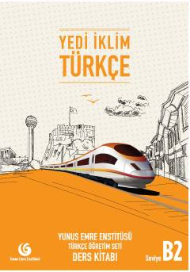

YİYabancılar için hazırlanan kapsamlı B2 seviyesi Türkçe ders kitabı.
Yunus Emre Enstitüsü tarafından yabancılar için Türkçe eğitimi amacıyla hazırlanan B2 seviyesindeki bu ders kitabı, okuma, yazma, dinleme ve konuşma becerilerini geliştirmeyi hedeflemektedir. Günlük hayatın ihtiyaçlarına uygun olarak tasarlanan eser, zengin metinleri ve dil bilgisi alıştırmalarıyla öğrencilerin Türkçeyi akıcı bir şekilde kullanmasını sağlar.